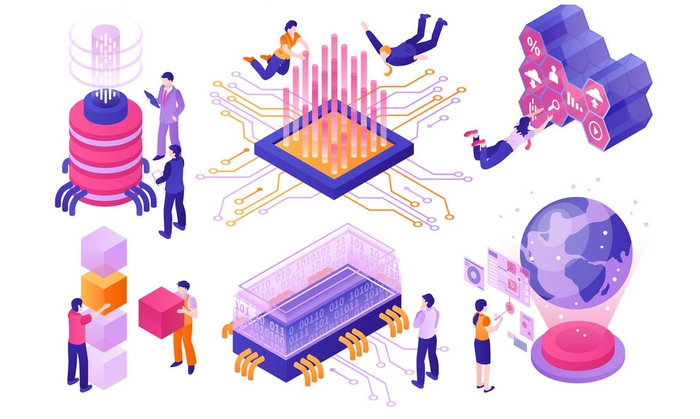

La tecnología es el conjunto de nociones, habilidades y conocimientos que el ser humano utiliza para lograr un objetivo preciso, que puede facilitar o ser la solución de un problema específico del individuo o la satisfacción de alguna de sus necesidades.
La tecnología es una respuesta al deseo del hombre de transformar el medio y mejorar su calidad de vida. Incluye conocimientos y técnicas desarrolladas a lo largo del tiempo que se utilizan de manera organizada con el fin de satisfacer alguna necesidad.

Origen
Instintivamente, desde el inicio de la historia, las personas buscaron desarrollar tecnología (técnicas para mejorar su calidad de vida). Los descubrimientos que ha hecho el hombre a lo largo de los años han ido conformando el mundo tal como se lo conoce hoy en día, por lo tanto, la tecnología existe desde el inicio de la especie, aunque no ha sido llamada como tal sino hasta el siglo XVIII.
Para qué sirve la tecnología
La tecnología es uno de los cuatro factores de la producciónjunto con el capital, la tierra y el trabajo. El hombre utiliza la para satisfacer sus necesidades lo que puede implicar, transformar su medio, resolver problemas, aumentar la eficiencia, mejorar la estética, etc.
La tecnología bien utilizada puede mejorar la calidad de vida de las personas (como, por ejemplo, el desarrollo de métodos de producción más limpios). No obstante, mal utilizada, puede causar grandes daños a las personas y a la sociedad (por ejemplo, la utilización de tecnología para ataques y crímenes).
Importancia de la tecnología
Los descubrimientos y la aparición de nuevas herramientas producidas a través de la tecnología fueron clave para el desarrollo humano y de las sociedades. La tecnología aporta grandes descubrimientos que permiten mejorar la producción, facilitar la vida en sociedad, acortar distancias, etc.
Ha permitido al ser humano conocer a fondo el medio que lo rodea y modificarlo para lograr sus fines; a través de los siglos el hombre inventó y modificó herramientas para mejorar su estilo de vida.
La tecnología ha traído consigo descubrimientos en el plano de la medicina, avances en el acceso a la información, en la comunicación y el transporte, en la simplificación de tareas.
Características de la tecnología
-
Está presente en todos los ámbitos de la vida personal y en sociedad, como el trabajo, la educación, la medicina, la comunicación.
-
Permite fabricar nuevos objetos: a través de ella, el ser humano modifica el medio que lo rodea.
-
Es responsable de la mayoría de los descubrimientos del hombre.
-
Si está bien utilizada mejora la calidad de vida del ser humano, si está mal utilizada puede causar graves daños a los individuos y a la sociedad.
-
Está sujeta al cambio (los cambios tecnológicos se dan de manera discontinua).
-
Sus desarrollos implican cambios culturales, laborales y sociales.
-
El desarrollo tecnológico dispar puede generar brechas sociales y económicas dentro de una comunidad o entre regiones o naciones.
Tipos de tecnologías
La tecnología se puede clasificar de diferentes maneras según las características que se tomen en cuenta.
Según el tipo de producto:
-
Tecnologías duras: Utilizan elementos de las ciencias duras como la ingeniería, la mecánica, la matemática, la física, la química. El producto que se obtiene es visible y tangible, es decir, se trata de la producción de bienes materiales. Por ejemplo: la elaboración de un dispositivo móvil.
-
Tecnologías blandas: Se apoyan sobre las ciencias humanísticas o blandas, como la sociología, la psicología, la economía. Por lo general, se las utiliza para mejorar procesos y lograr mayor eficiencia en instituciones o empresas. El producto que se obtiene no es visible ni tangible, dado que consiste en la elaboración de servicios, estrategias, teorías. Por ejemplo: la elaboración de un software.
De acuerdo a la diversidad de sectores en los que pueda utilizarse, se clasifica en:
-
Tecnologías flexibles: Son utilizadas en distintas áreas, es decir, poseen varios usos. Por ejemplo: el microchip que se utiliza en teléfonos y computadoras.
-
Tecnologías fijas: Se utilizan para la producción de un determinado producto, o en un área determinada. Son tecnologías diseñadas y producidas con un solo fin.
Según el nivel de innovación:
-
Tecnologías de punta: También llamadas “altas tecnologías” o “últimas tecnología”, son tecnologías más avanzadas, disponibles en un determinado lugar y momento.
-
Tecnologías adecuadas: Son tecnologías que se diseñan teniendo en cuenta el impacto ambiental, social y económico en una determinada sociedad.
Según su aplicación
-
Tecnologías de operación: Se obtienen después de un largo período de tiempo de estudio, observación y experiencia.
-
Tecnologías de equipo: Son desarrolladas por los fabricantes de un determinado producto.
-
Tecnologías de producto: Se encargan de grupar la técnica, características y conocimientos utilizados en la construcción de un producto o servicio determinado como habilidades manuales y conocimientos teóricos aplicados para lograr un objetivo específico.
Algunos ejemplos de tecnologías
-
Robótica: Utiliza herramientas y conocimientos de diversas disciplinas (ingeniería electrónica, ingeniería eléctrica, informática) para el diseño y fabricación de robots. Se espera que estos robots puedan realizar tareas automatizadas y trabajos que resultan rutinarios y tediosos para el ser humano o abaratar costos de producción en las industrias.
-
Criptomonedas: Son un tipo de divisa digital que utiliza una tecnología de registro distribuido (permite registrar y sincronizar transacciones entre múltiples usuarios en distintas ubicaciones).
-
Impresión 3D: Es un tipo de impresión por adición que crea de forma eficiente piezas únicas y geometrías complejas en una gran variedad de materiales. A través de la impresión 3D se crea un objeto tridimensional mediante la superposición de las capas de materiales, y se utiliza en gran cantidad de industrias para diferentes usos.
-
Inteligencia artificial: Implica la creación de máquinas que imitan las funciones cognitivas de los seres humanos. Esta tecnología es utilizada en varias disciplinas como economía, medicina, transporte, software de videojuegos, control de sistemas, reconocimiento de escritura, reconocimiento del habla y reconocimiento de patrones en los asistentes en línea.
-
Vehículos autónomos: Se utiliza la tecnología para la creación de automóviles sin conductor que están programados para imitar las capacidades humanas de manejo y control. Este tipo de vehículos percibe el entorno mediante sistemas de láser, radares, visión computarizada. Existen varios programas que están poniendo a prueba esta nueva tecnología para ver si puede darse un uso extensivo.
-
Biotecnología: Es la disciplina que utiliza la tecnología para crear productos a partir de sistemas biológicos y organismos vivos. La biotecnología ha sido la responsable de la creación de vacunas y anticuerpos y se utiliza en medicina, agricultura, industria y cuidado del medio ambiente.